You need password to access to the content, go to Slack *#phdsukai to find more.
Part of this article is encrypted with password:
[TOC]
Project: hindsight Experience Relabelling using natural language#
Background#
Hindsight Experience Relabelling#
check this youtube video to know what is HER https://www.youtube.com/watch?v=Dvd1jQe3pq0
Basically the core idea behind HER is that when the agent fails to achieve the goal at the current round, we manually modify the goal so that the previously undesirable actions will become desirable. As such we will have more positive experiences. (For some complex tasks, it is almost impossible for an agent to naturally obtain a positive experience)
E.g.,
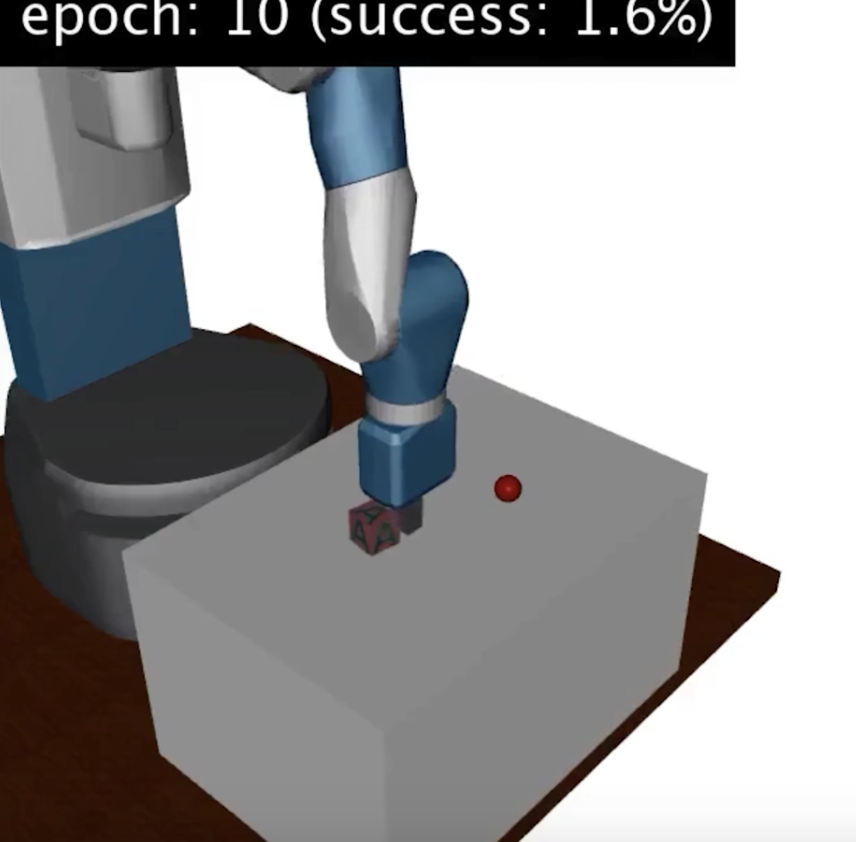
Task: let the robot arm push the box to the red point.
If the agent failed to achieve the goal in current episode, we relabel the red point to the current position of the box so as to obtain a positive trajectory.
Atari tennis#
In addition to Montezuma’s Revenge, “Atari Tennis” is another Atari-2600 game that is difficult for RL agents to conquer.
check this Youtube video https://www.youtube.com/watch?v=xQ2Q6eEjQx8
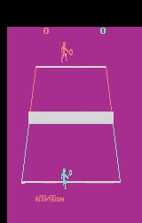
There are two reasons that makes it hard to play.
- the reward is sparse, the environment only gives you positive / negative scores once the game round is over.
- if the agent has zero knowledge about tennis sport, most likely it will always receive negative scores
- due to the lack of positive feedback, RL agents tend to just stop playing the game so as to avoid losing scores.
Performance of existing RL agents#
Check the Leaderboard https://paperswithcode.com/sota/atari-games-on-atari-2600-tennis
- MuZero from DeepMind
https://paperswithcode.com/method/muzero
MuZero is a model-based reinforcement learning algorithm. It builds upon AlphaZero’s search and search-based policy iteration algorithms, but incorporates a learned model into the training procedure.
the score is 0.00
- Width-based Lookaheads with Learnt Base Policies and Heuristics agent from Stefan O’Toole et. al.
the average score is also 0.00
There are some agents that have positive Atari tennis scores.#
- DreamerV2 from Google Research
https://paperswithcode.com/paper/mastering-atari-with-discrete-world-models-1
DreamerV2 is a RL agent that learns behaviour purely from predictions in the compact latent space of a powerful world model. The world model uses discrete representations and is trained separately from the policy.
One can check this blog (in Chinese) to check the details of DreamerV2 model, but the core idea is that they use a very complex world model to predict the next observation and reward by taking the current action. In the end, the model can choose the action that maximise the predicted rewards.
Drawback of this method
- the model is a little bit complex
- there is a quite number of hyper-parameters to fine-tune.
The score in Atari tennis is 14
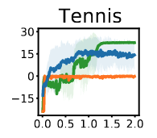
x-axis unit is 100 Million
- IQN from DeepMind
IQN model use quantile regression to calculate the state-action return distribution. Hence, when the performance of the IQN agent is bad, it’s attitude will be “risk-seeking” and therefore try to explore better strategies. In contrast, when the performance of the IQN agent is good, it will become “risk-averse”.
The score in Atari tennis is 23
- GDI from Tsinghua University
the author pointed out that the core difference between Reinforcement Learning and supervised learning is that RL explicitly and naturally transform the training data distribution.
So the author proposed an additional operator $\epsilon$ (a bandits controller) so that the agent can explicitly control the experience replay selections.
The score in Atari tennis can reach 24 for 200M training frame
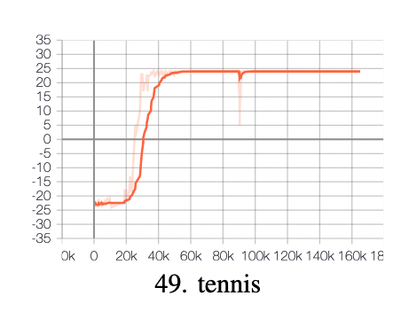
Summary for existing models: Exploration is the key factor for RL agents to win Atari Tennis. And there is no specific solutions for sparse reward issue.
Motivation#
We want to see if we can use natural language as additional reward signal to guide the agent and still conquer the game without extensive exploration
(Extensive exploration often means huge amount of training time)
Since Atari Tennis is a task with sparse reward, we can use text descriptions to provide additional reward signal to the RL agent.
Prasoon Goyals has already done some research on natural language for reward shaping in RL before (https://arxiv.org/abs/1903.02020)
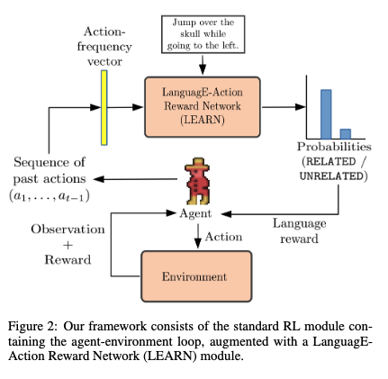
Nevertheless, this proposed project is different from Prasoon Goyal’s work in the following factors:
| Factors | Prasoon Goyal’s | Ours |
|---|---|---|
| Game Trajectories data | 20 Positive walkthrough trajectories collected from human players, containing a total about 183,000 frames | We can collect game trajectories from random agents or immature RL agents (even if almost all the trajectories are negative) (Benefits: less labour work $\rightarrow$ we do not need a large number of volunteers to directly play the game ) |
| Text annotation data | Purely low level commands that match the positive trajectories e.g., “Jump over the skull while going to the left” | We want to annotate at different levels e.g., low level descriptions that directly describe to the (bad) actions such as “move to bottom left corner but miss the ball”. But we also encourage annotators to add high level descriptions that describe the situations such as “the ball continuously landed on the left side of the court”. By doing this, we expect that the agent is able to also understand high level language information. The ability to understand high level NL is crucial for agents to conquer the game (will be discussed in Testing phase) |
| Core mechanism | The author trained an additional Reward Network that was used to provide additional reward to the agent | No need to train a new network to calculate additional rewards, instead, we simply feed the descriptions of the actions/situations to the RL agent and directly give it rewards no matter if the sequence of actions is desirable or not. Hindsight Experience relabelling (HER) mechanism means that even though the actions may not cause the agent to win the tennis game, the agent can get some rewards because the actions matches the text descriptions. And we expect that in the end, the RL agent is able to also obey the text instructions because the agent would believe that it can receive more rewards by following the instructions. |
| Testing phase | Since they only train the model using low level commands, essentially the model cannot play Montezuma’s Revenge game by itself. Montezuma’s Revenge is a complex adventure game that requires a lot of steps to conquer. In order to really win Montezuma’s Revenge game, the researcher needs to continue providing next-step instructions based on the current state in real-time. Therefore in the final testing phase, the researcher changed from testing the whole Montezuma’s Revenge game to testing some simple tasks, such as “climb down the ladder”. | We do not want humans to keep providing instructions in real-time when playing the game. In fact, it is not even feasible in real life – the tennis players need to react to the incoming tennis ball within a limited short time, and there is not time for them to wait for the next-step instructions. So, what we need is that we only provide fixed high level strategies of playing tennis at every gaming step and we hope that the RL agent can understand those high level strategies and apply them throughout the whole game. |
In fact, we cannot guarantee that the agent is able to understand the high level strategies, even if we use pretrained large-scale language model to encode the texts.
- if the agent cannot utilise the high level strategies information, we then try to further train the model with only few positive trajectories that are annotated with those high-level strategies
- we expected that the process of “hindsight experience relabelling using natural language” will reduce the number of annotated positive trajectories required. (in other words, HER using NL stimulate few-shot learning ability of the agent)
Procedure#
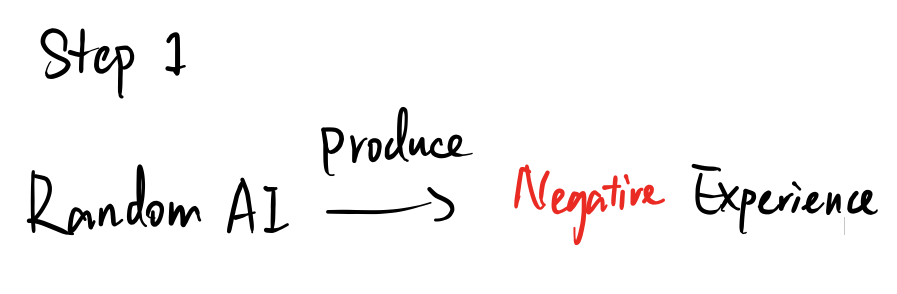
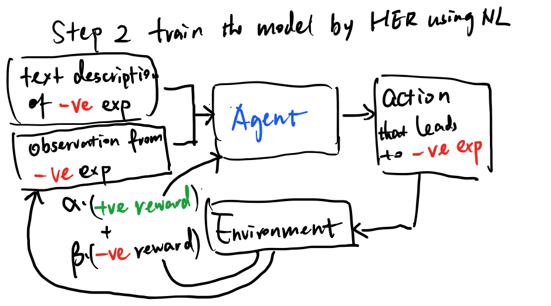
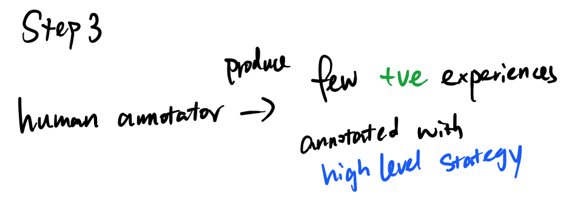
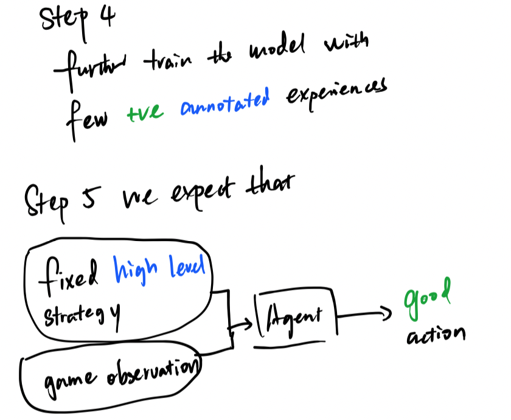
Atari Skiing would also be a good research environment#
https://www.endtoend.ai/envs/gym/atari/skiing/
Object: to run through all gates (between the poles) in the fastest time
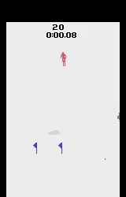
Leaderboard
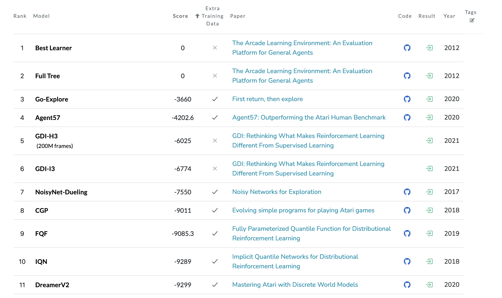
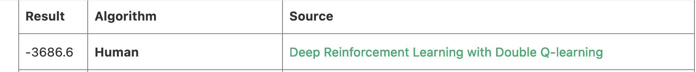
As we can see only the models that focus on extensive exploration (e,g., Go-Explore model) can conquer the Atari Skiing game. But extensive exploration often means huge amount of training time, so we would like to see if HER using NL could help.
The reason why Atari Skiing is difficult
- the in-game reward signal is always negative
- small negative rewards are given on every timestep
- reward is sparse
- a huge (negative) reward will only be given at the termination of the game, where score = - 500 * Num_of_missing_gates
Appendix#
GDI paper#
Quotes from the paper
One of the fundamental reasons RL holds the ability to change the data distribution is the change of behaviour policies, which directly interact with the dynamic environments to obtain training data. Therefore, the training data can be controlled by adjusting the behaviour policies.
Diversity is one of the main factors that should be considered while selecting training examples. But we have to explore the following question: Does diverse data always benefit effective learning
It seems that both expanding the capacity of policy space for behaviours and selecting suitable behaviour policies from a diverse behaviour population matter for efficient learning. This new perspective motivates us to investigate another critical problem: How to select superior behaviours from the behaviour policy space?
To address those problems, the author proposed a novel RL paradigm called Generalised Data Distribution Iteration (GDI), which consists of two major process
- the policy iteration operator $\tau$,
- the data distribution iteration operator $\epsilon$
behaviours will be sampled from a policy space according to the selective distribution, which will be iteratively optimized through the operator $\epsilon$
Simultaneously, elite training data will be used for policy iteration via the operator $\tau$
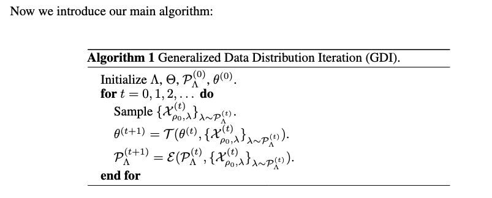
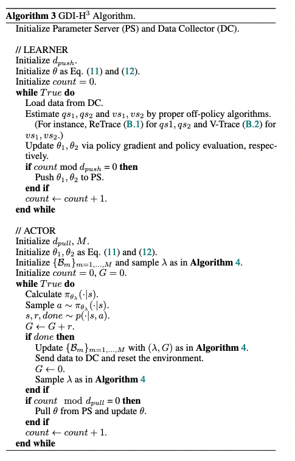
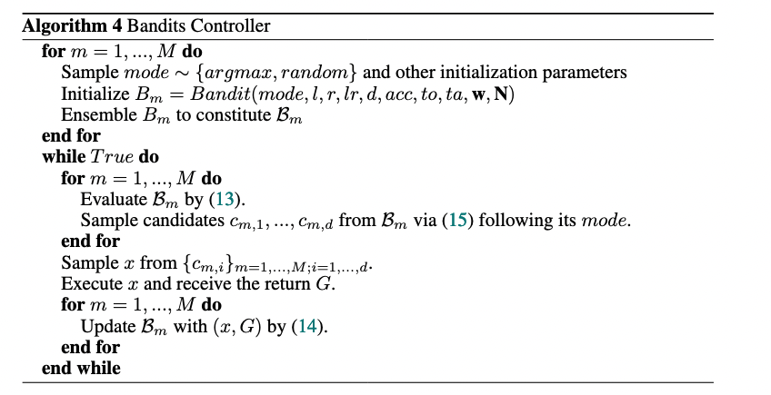
Paper Reading Notes#
- Flamingo: a Visual Language Model for Few-Shot Learning
- Author: Jean-Baptiste Alayrac et. al.
- Publish Year: Apr 2022
- Review Date: May 2022